一、tomcat介绍
Tomcat是Apache 软件基金会（Apache Software Foundation）的Jakarta 项目中的一个核心项目，由
Apache、Sun 和其他一些公司及个人共同开发而成。因为Tomcat 技术先进、性能稳定，而且免费，因而
深受Java 爱好者的喜爱并得到了部分软件开发商的认可，成为目前比较流行的Web 应用服务器。
Tomcat 服务器是一个免费的开放源代码的Web 应用服务器，属于轻量级应用服务器，在中小型系统和并
发访问用户不是很多的场合下被普遍使用，是开发和调试JSP 程序的首选。对于一个初学者来说，可以这
样认为，当在一台机器上配置好Apache 服务器，可利用它响应HTML（标准通用标记语言下的一个应用）
页面的访问请求。实际上Tomcat是Apache 服务器的扩展，但运行时它是独立运行的，所以当你运行
tomcat 时，它实际上作为一个与Apache 独立的进程单独运行的。Apache 为HTML页面服务，而
Tomcat 实际上运行JSP 页面和Servlet。
官方网站：http://tomcat.apache.org/
如何安装tomcat？
方法一：本地yum安装(base源)
systemctl start tomcat
默认监听：8080，8005(管理端口)，8009
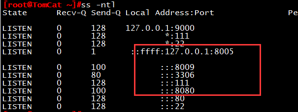
方法二：ASF官网站点下载安装
官方网站下载地址：https://tomcat.apache.org/download-90.cgi
wget http://mirrors.hust.edu.cn/apache/tomcat/tomcat-8/v8.5.24/bin/apache-tomcat-8.5.24.tar.gz
tar -zxf apache-tomcat-8.5.24.tar.gz
启动tomcat
./apache-tomcat-8.5.24/bin/startup.sh
添加环境变量CATELINA_HOME
vim /etc/profile.d/
export CATALINA_BASE=/usr/local/tomcat
export PATH=$CATALINA:$PATH
服务控制由catalina脚本执行
catalina.sh start
此时，浏览器访问localhostIp:8080就可以看到tomcat默认界面了
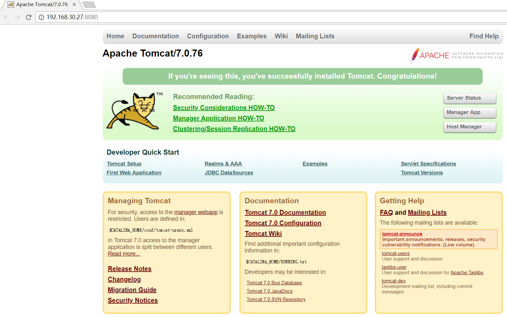
二、tomcat服务配置
Tomcat的主要目录结构：
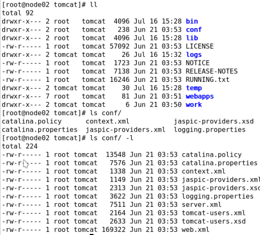
bin：脚本，及启动时用到的类；
conf：配置文件目录；
lib：库文件，Java类库，jar；
logs：日志文件目录；
temp：临时文件目录；
webapps：webapp的默认目录；
work：工作目录，存放编译后的字节码文件；
Tomcat的配置文件构成：
server.xml：主配置文件；
web.xml：每个webapp只有“部署”后才能被访问，它的部署方式通常由web.xml进行定义，其存放位置为
WEB-INF/目录中；此文件为所有的webapps提供默认部署相关的配置；
context.xml：每个webapp都可以使用的配置文件，它通常由专用的配置文件context.xml来定义，其存
放位置为WEB-INF/目录中；此文件为所有的webapps提供默认配置；
tomcat-users.xml：用户认证的账号和密码文件；角色（role），用户（User）；此文件在tomcat启动
时被装入内存；
catalina.policy：当使用-security选项启动tomcat时，用于为tomcat设置安全策略；
catalina.properties：Java属性的定义文件，用于设定类加载器路径，以及一些与JVM调优相关参数；
logging.properties：日志系统相关的配置；
Tomcat的核心组件：server.xml
…
…
…
…
每一个组件都由一个Java“类”实现，这些组件大体可分为以下几个类型：
顶级组件：Server
服务类组件：Service
连接器组件：http, https, ajp（apache jserv protocol）
容器类：Engine, Host, Context
被嵌套类：valve, logger, realm, loader, manager, …
集群类组件：listener, cluster, …
一般 web 项目路径结构
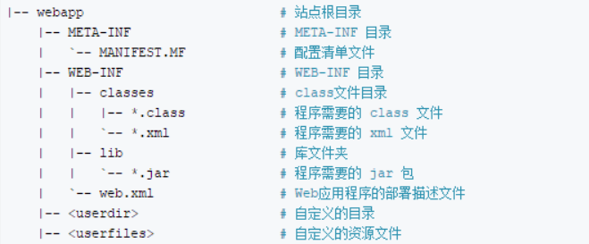
webapp归档格式：
.war：webapp;
.jar：EJB的类打包文件(类库)；
.rar：资源适配器类打包文件；
.ear：企业级webapp；
…
部署(deploy)webapp的相关操作：
deploy：将webapp的源文件放置于目标目录(网页程序文件存放目录)，配置tomcat服务器能够基于
web.xml和context.xml文件中定义的路径来访问此webapp；将其特有的类和依赖的类通过class loader装载
至JVM；
部署有两种方式：
自动部署：auto deploy
手动部署:
冷部署：把webapp复制到指定的位置，而后才启动tomcat；
热部署：在不停止tomcat的前提下进行部署；
部署工具：manager、ant脚本、tcd(tomcat client deployer)等；
undeploy：拆除（反部署），停止webapp，并从tomcat实例上卸载webapp；
start：启动处于停止状态的webapp；
stop：停止webapp，不再向用户提供服务；其类依然在jvm上；
redeploy：重新部署；
Tomcat基础架构
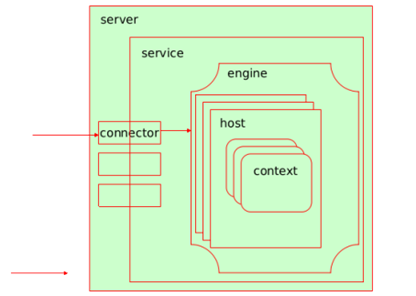
连接器(connector)负责接收请求并传给引擎，由引擎运行jsp代码并返回给连接器
Server：代表整个服务器，一个server可以包含多个service
一个Service可包含一个Engine，多个Connecter
Connector：连接器类元素，代表通信接
Engine：为特定的Service组件处理客户请求，要包含多个Host
Host：为特定的虚拟主机组件处理客户请求，可包含多个Context
Context：为特定的Web应用处理所有的客户请求
Tomcat的常用组件配置：
Server
功能：代表tomcat instance，即表现出的一个java进程；监听在8005端口，只接收“SHUTDOWN”。各
server监听的端口不能相同，因此，在同一物理主机启动多个实例时，需要修改其监听端口为不同的端
口；
port=”-1″,
shutdown=”RANDOM_CHARCTER”
Service
功能：用于实现将一个或多个connector组件关联至一个engine组件；
一个Server中可以有多个Service
Connector
功能：负责接收请求，常见的有三类http/https/ajp；
进入tomcat的请求可分为两类：
(1) standalone : 请求来自于客户端浏览器；
(2) 由其它的web server反代：来自前端的反代服务器；
nginx –> http connector –> tomcat
httpd(proxy_http_module) –> http connector –> tomcat
httpd(proxy_ajp_module) –> ajp connector –> tomcat
httpd(mod_jk) –> ajp connector –> tomcat
属性：
port=”8080″
protocol=”HTTP/1.1″
connectionTimeout=”20000″
address：监听的IP地址；默认为本机所有可用地址；
maxThreads：最大并发连接数，默认为200；
enableLookups：是否启用DNS查询功能；
acceptCount：等待队列的最大长度；
secure：
sslProtocol：
Engine
功能：Servlet实例，即servlet引擎，其内部可以一个或多个host组件来定义站点； 通常需要通过
defaultHost来定义默认的虚拟主机；
属性：
name= #此引擎的逻辑名称，用于日志和错误消息。
defaultHost=”localhost” #默认主机名，用于标识将处理指向此服务器上主机名称但未在此配置文件中配
置的请求的主机。
jvmRoute=
Host
功能：位于engine内部用于接收请求并进行相应处理的主机或虚拟主机
Host元素表示一个虚拟主机
常用属性说明：
name：名称；用于日志输出
appBase：虚拟主机对应的应用基础路径，可以是个绝对路径, 或${CATALINA_BASE}相对路径
xmlBase：虚拟主机XML基础路径,里面应该有Context xml配置文件；可以是个绝对路径, 或${CATALINA_BASE}相对路径
createDirs：当appBase和xmlBase不存在时,是否创建目录；默认为true
autoDeploy：是否周期性的检查appBase和xmlBase并deploy web应用和context描述符；默认为true
deployIgnore：忽略deploy的正则
deployOnStartup：Tomcat启动时是否自动deploy；默认为true
Context
功能：Context元素表示一个Web应用程序，它在特定的虚拟主机中运行。每个Web应用程序都基于Web
应用程序存档（WAR）文件，或者包含相应的解包内容的相应目录
常用属性说明：
altDDName：web.xml部署描述符路径；默认 /WEB-INF/web.xml
docBase：Context的Root路径，和Host的appBase相结合, 可确定web应用的实际目录
path ：web应用的context path；如果为根路径,则配置为空字符串(“”), 不能不配置
privileged：是否使用Tomcat提供的manager servlet
reloadable：/WEB-INF/classes/ 和/WEB-INF/lib/ 目录中class文件发生变化是否自动重新加载；默认为false
swallowOutput：true情况下, System.out和System.err输出将被定向到web应用日志中；默认为false
Valve
Valve存在多种类型：
定义访问日志：org.apache.catalina.valves.AccessLogValve
定义访问控制：org.apache.catalina.valves.RemoteAddrValve
三、实验：实现tomcat应用部署及版本控制
前期准备：
本节实验全部以yum安装为准,tomcat版本：tomcat-7.0.76-6.el7.noarch
创建一个测试类应用
mkdir -pv /usr/share/tomcat/webapps/test/{classes,lib,WEB-INF}
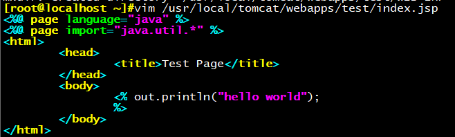
tomcat端测试：
浏览器打开：tomcat.wxlinux.com/test/
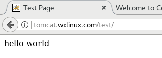
当应用被部署上线后，就会在/usr/share/tomcat/work/Catalina/localhost/test目录生成源码和类
库文件
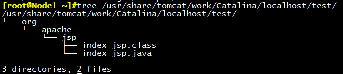
版本部署
软连接实现部署部署
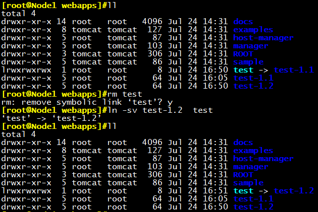
软连接方式不支持热部署，需重启tomcat服务后才能连接成功
systemctl restart tomcat
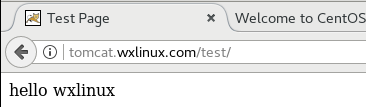
生产环境中一般使用git来实现版本控制，可以使用一个目录名包含多个版本程序
四、实验：tomcat创建虚拟主机Host及Context
定义虚拟主机
修改server配置文件添加一个host配置：
vim /etc/tomcat/server.xml
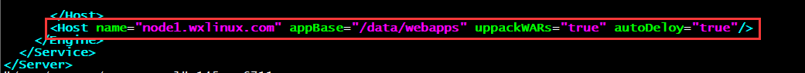
写入一个测试类应用，内容如下：
mkdir /data/webapps/ROOT/{classes,lib,META-INF,WEB-INF} -pv
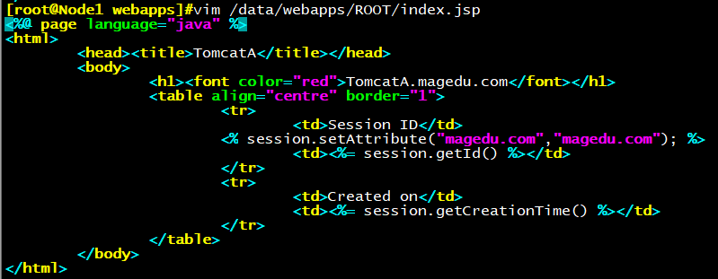
为了方便访问，这里添加主机名解析到hosts文件中
vim /etc/hosts
192.168.30.18 node1.wxlinux.com
浏览器访问node1.wxlinux.com:8080
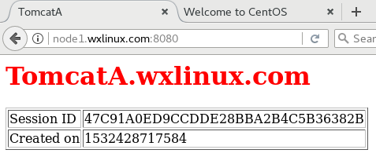
自定义host日志：
vim /etc/tomcat/server.xml
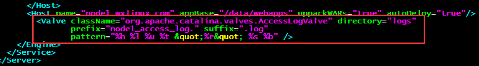
当host被访问时，后生成日志：
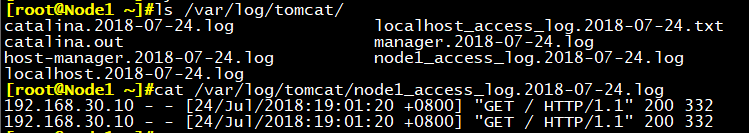
创建一个context：
vim /etc/tomcat/server.xml
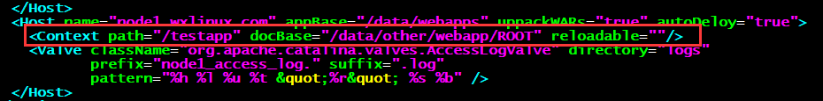
在context定义的目录中创建另外一个应用，为了方便对比，仅仅改变字体颜色：
测试访问：
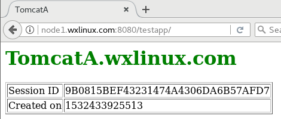
五、实验：开启tomcat管理页面
前期准备：
虚拟机一台
系统版本：CentOS 7.4 IP：192.168.30.27
manager管理页面：
vim /etc/tomcat/tomcat-users.xml
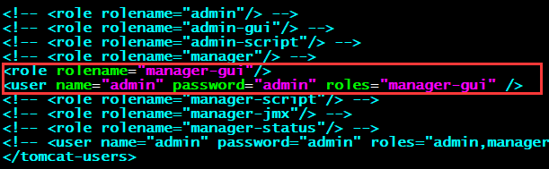
浏览器打开192.168.30.27:8080点击红色区域
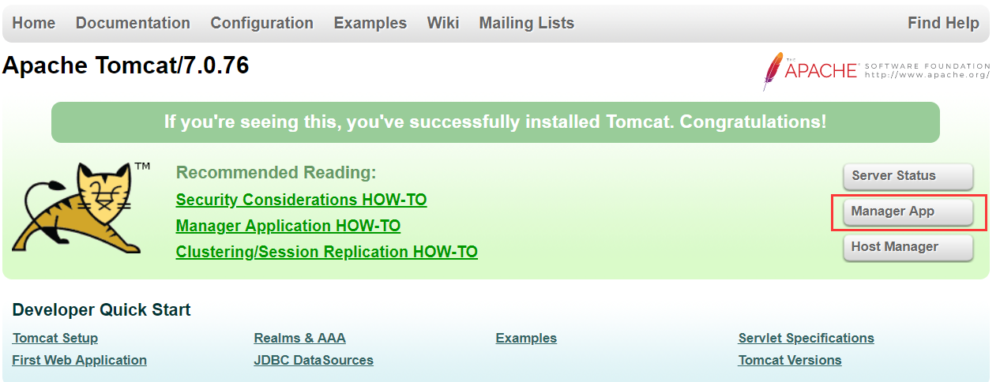
管理界面可进行对web的管理，如停止，开始，卸载部署等操作
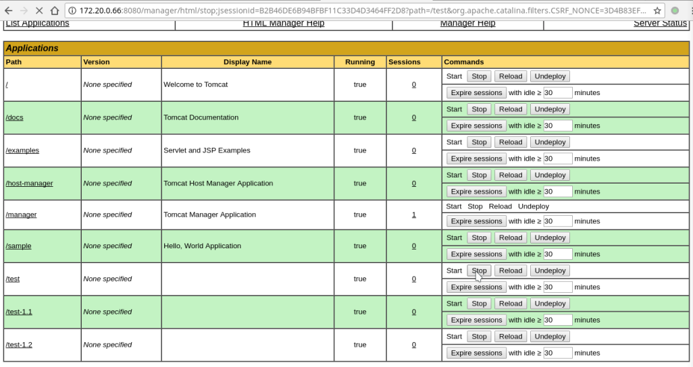
图形界面热部署WAR文件：
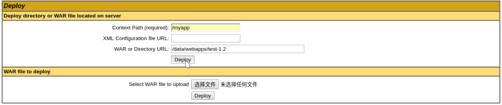
HostManager管理页面：
vim /etc/tomcat/tomcat-users.xml
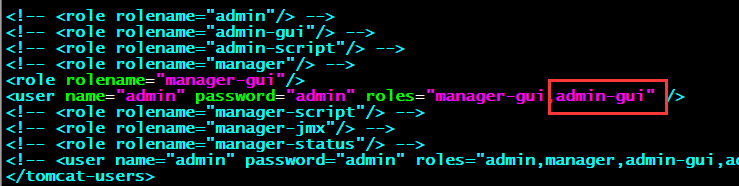
测试访问：
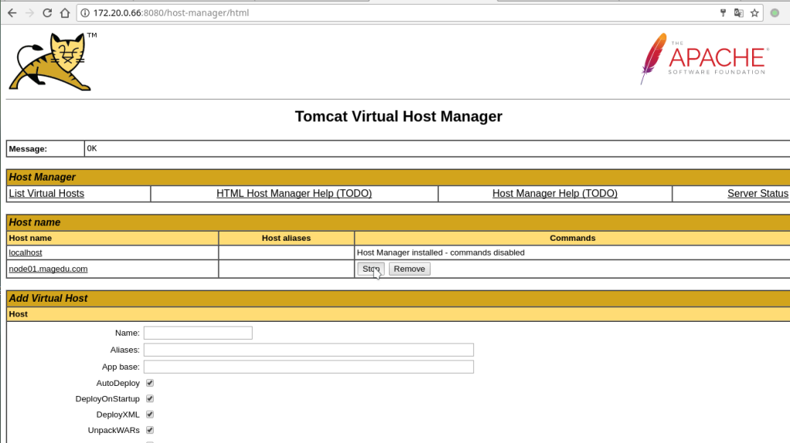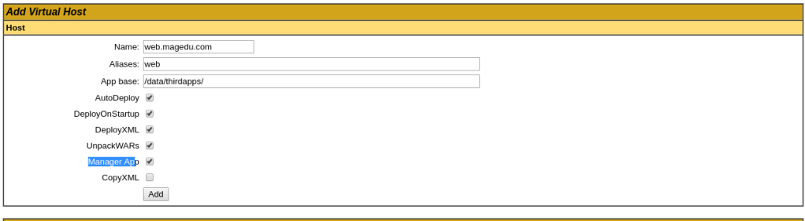